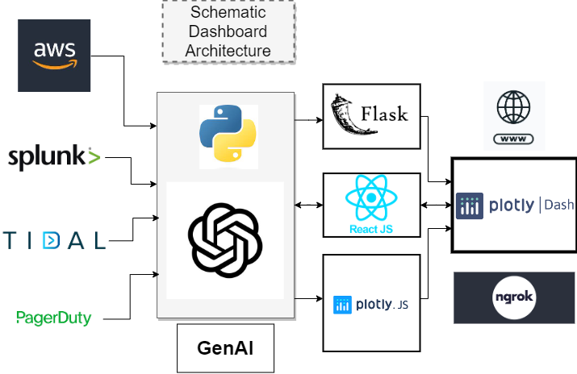

Advanced Application for Infrastructure Monitoring
The project proposes an advanced application for infrastructure monitoring that leverages AI and machine learning techniques to address the challenges faced in traditional monitoring systems. The proposed solution aims to automate the monitoring process, identify issues proactively, suggest solutions, and implement them automatically when possible. It involves processing log data, training a GPT model to identify root causes, predict potential failures, and provide recommendations. The application can analyze infrastructure health, job failures, and schedules, offering a comprehensive and proactive approach to monitoring. The solution promises to improve system reliability, accelerate error detection, facilitate faster debugging and resolution, empower engineers, and provide enhanced operational insights. The project includes a proof of concept and a roadmap for further development, incorporating job dependency analysis, predictive dashboards, and alerting mechanisms.